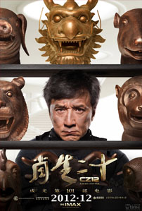
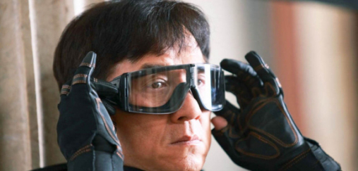

Review Chinese Zodiac
Jum'at, 29 November 2013

Chinese Zodiac, yang menjadi film ke-101 yang dibintangi oleh Jackie Chan, dibuka dengan narasi yang menuturkan tentang negara China yang diinvasi oleh pasukan Inggris pada tahun 1860. Tidak hanya menjajah wilayah dan rakyat negara tersebut, para pasukan Inggris juga mencuri banyak benda-benda bersejarah untuk dibawa pulang kembali ke negara mereka, termasuk 12 potongan patung kepala binatang yang mewakili 12 figur astrologi China. Ratusan tahun berlalu, benda-benda bersejarah yang awalnya dikira telah musnah tersebut secara perlahan mulai muncul di berbagai rumah pelelangan dunia dengan harga yang setinggi langit akibat diburu oleh banyak kolektor dan pemburu barang-barang antik dari berbagai penjuru dunia.
Salah satu dari pemburu barang antik tersebut adalah seorang pengusaha terkenal bernama Lawrence Morgan (Oliver Platt) yang berkeinginan begitu besar untuk mengoleksi kedua belas artifak tersebut sehingga akhirnya menyewa seorang pemburu harta karun, JC (Jackie Chan), untuk mengumpulkannya dengan bayaran sebesar US$1 juta untuk setiap potongan kepala patung yang berhasil didapatnya.
Salah satu dari pemburu barang antik tersebut adalah seorang pengusaha terkenal bernama Lawrence Morgan (Oliver Platt) yang berkeinginan begitu besar untuk mengoleksi kedua belas artifak tersebut sehingga akhirnya menyewa seorang pemburu harta karun, JC (Jackie Chan), untuk mengumpulkannya dengan bayaran sebesar US$1 juta untuk setiap potongan kepala patung yang berhasil didapatnya. Bersama dengan anggota kelompoknya (Kwon Sang Woo, Zhang Linxin dan Liao Fan), JC memulai pencariannya dengan menemui Coco (Yao Xingtong), seorang wanita peneliti yang berniat untuk mengumpulkan seluruh benda bersejarah asal China dan mengembalikannya kembali ke negara asalnya. Melalui Coco-lah, JC mulai belajar bahwa benda-benda bersejarah yang selama ini ia buru, memiliki identitas yang sama sekali tidak dapat diukur dengan uang semata.
Tidak hanya berperan sebagai seorang produser, sutradara, aktor maupun penulis naskah bagi Chinese Zodiac, Chan juga ambil bagian dalam berbagai bagian teknis pembuatan film ini seperti penata sinematografi, komposer, koordinator pemeran pengganti hingga – this is serious! – koordinator katering. Mudah-mudahan Chan mampu menyajikan deretan makanan yang memuaskan selama proses produksi berlangsung karena tidak ada satupun bagian teknikal yang melibatkan nama Chan benar-benar dapat dianggap muncul dalam kualitas memuaskan dalam film ini. Chan sepertinya begitu terjebak dengan kejayaannya di masa lampau sehingga terlihat berusaha keras untuk menyajikan pola penceritaan yang sama di film ini. Lihat saja bagaimana tata koreografi aksi film ini. Begitu mudah ditebak. Tata sinematografi dan tata musik film ini juga hadir medioker. Sama sekali tidak memberikan dukungan bagi kualitas film ini secara keseluruhan.

Yang paling menyedihkan, tentu saja, adalah bagaimana Chan menuliskan naskah cerita film ini. Merupakan reboot dariArmour of God (1987) dan sekuelnya, Armour of God II: Operation Condor (1991) yang pernah dibintanginya serta meraih sukses besar, Chan seperti kebingungan untuk menyajikan kisah apa yang ingin ia ceritakan dan akhirnya juga menggabungkan berbagai plot cerita untuk ditampilkan kepada penontonnya. Dan lihat apa yang terjadi ketika naskah cerita yang berkualitas dangkal tersebut diarahkan oleh seorang sutradara yang juga tidak begitu mampu mengarahkan sebuah jalan cerita – tentu saja, Jackie Chan adalah sutradara yang dimaksud. 123 menit durasi film ini terasa bagaikan perjalanan yang begitu panjang dan melelahkan dengan Chan yang menghadirkan berbagai plot cerita filmnya yang saling berbenturan satu sama lain serta ritme penceritaan yang begitu berantakan.
Karakter-karakter yang dituliskan oleh Chan juga terlihat begitu dangkal. Setiap karakter digambarkan dengan begitu klise dan sama sekali tidak menarik. Yang lebih membingungkan adalah penggunaan bahasa Mandarin, Inggris dan Perancis oleh setiap karakter. Satu karakter dapat saja terlihat tidak mampu berbahasa Inggris di satu adegan, kemudian malah mampu berbahasa asing dengan lancar di adegan yang lain. Atau malah tidak mengenal bahasa Mandarin sebelumnya namun dengan fasih berdialog dengan bahasa tersebut di akhir cerita. Aneh. Satu-satunya sisi positif dari Chinese Zodiac adalah pemanfaatan efek visual yang cukup efektif di banyak adegan – sisi yang paling membedakan Chinese Zodiac dari dua seri Armour of God terdahulu.
Sayangnya, sama sekali tidak ada yang istimewa dalam presentasi Chinese Zodiac. Pada kebanyakan bagian, film ini lebih terasa sebagai sebuah usaha Jackie Chan untuk meraih kembali masa-masa kejayaannya namun dengan kemampuan yang lebih minimalis. Chan yang hadir dalam Chinese Zodiac adalah sosok aktor yang telah terlihat terlalu lelah untuk melakukan berbagai adegan aksi namun tetap memaksakan dirinya untuk tetap tampil dan bahkan memaksa untuk memberikan kontribusi di berbagai bagian teknikal lainnya yang harus diakui berada di luar batas kemampuannya. Klise, datar dan jauh dari kesan menarik, Chinese Zodiac mungkin akan diingat sebagai salah satu film terburuk yang pernah dibintangi oleh Jackie Chan.